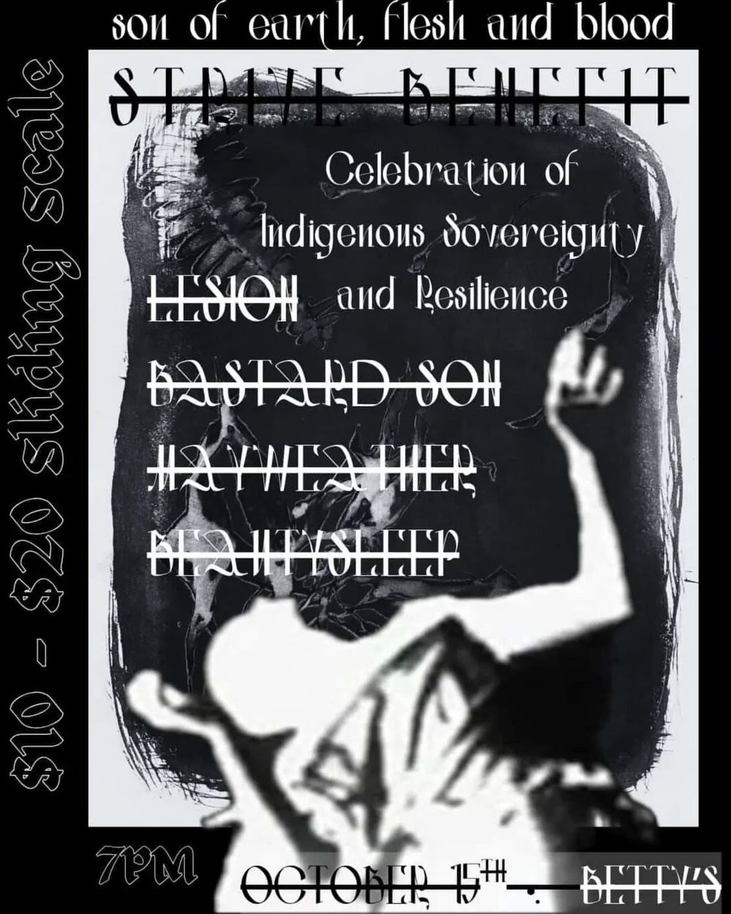

THU OCT 15
Lesion, Bastard Son, Hayweather, Beautysleep, 7.7 PNX
Betty’s · 506 W Belmont St, Pensacola, FL
★ benefit show
7pm
$10-$20 (sliding scale)
lesion, bastard son, hayweather, and beautysleep at betty’s, thursday october 15th. a strive benefit, celebration of indigenous sovereignty and resilience, with 7.7 pnx spinning in the courtyard plus food not bombs, shuttlepunx, and 309 punk project. 7pm, $10 to $20 sliding scale, $5 off the door with a nonperishable donation for food not bombs.